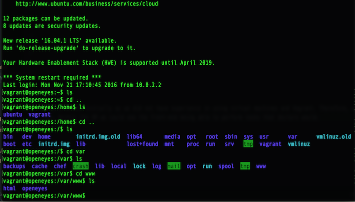
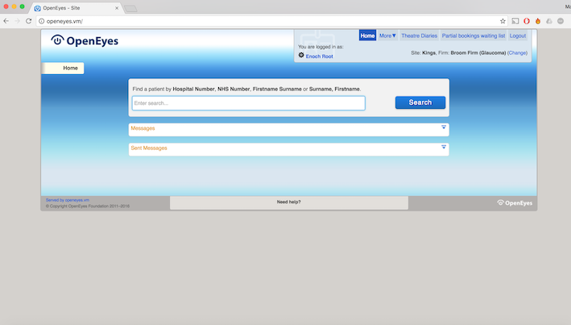
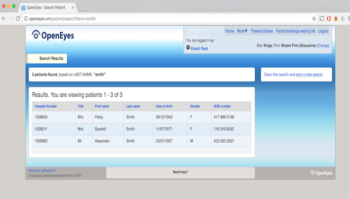

Initial Experiments
In order to start any sort of development, we had to experiment with the tools we would be using.
Experiments
First we were required to install the OpenEyes virtual machine on our personal computers. This caused problems initially as we did not have experience in using virtual machines and Vagrant. Therefore, we had to meet our clients technical team who aided us in setting up on our local machines.
Once working, we could access the OpenEyes Virtual Machine using Chrome (pictured below) and we could also access the server in Terminal. Within the VM we could see the front-end being able to perform tasks that doctors would. In the termial we could view the backend of the system, being given access to things such as the PHP and HTML files and being able to see the architecture of the whole system.
Some of the results from experimenting with the system can be seen below:

Steps needed to launch the VM

The server containing the VM

The homepage of the main OpenEyes site

Search results when "Smith" is searched in search field
Experiment Log
Above, you have seen a specific example of how we undertook some experimentation during the development process of our project. Below, you can see all of the experiments we have undertook or will need to undertake over the next term.
The aim of the experiments was to help us identify the methods of satisfying the requirements and test frameworks and tools. We were able to identify solutions to problems that developed following requirements gathering. The experiments were very important for the design process and it prepares us well for the implementation and development stage. The most up to date experiment log for the experiments is shown below:
| Exp. no | Title | Experiment Details | Experiment Results | Success and Failure | Done By | Done |
|---|---|---|---|---|---|---|
| 1 | Uploading | The aim was to investigate how to differentiate between uploading a new system and adding a new version of an existing system? | We identified that once the users selects to “load”, we needed two separate pathways for the respective circumstances. If the user intends to upload a new system, then they should be able to select the file to upload and the name for it. In order to upload a new version, the user will have to first select a system and then choose the new file and classify the version. | We succeeded in outlining the separate pathways. | Pius and Pierce | 1/12/16 |
| 2 | Maintaining | We wanted to identify what pathway should be followed by the user for maintenance of a version | We identified that the user must select the system and then its version to modify. Then they should be able to select which method to use to maintain a version. They should be able to either modify the version directly, or duplicate and modify or export the version as an SQL file. The first two options involved making changes within the app. They should be able to add and remove information from the tables. | This experiment clearly identified the pathway to following for maintaining a version. However this experiment didn’t tackle the maintenance of very big file versions. | Pius and Pierce | 2/12/16 |
| 3 | Format of data dictionary tables | We wanted to identify the format to use for displaying the data dictionary tables | This experiment helped us identify the format and attributes to use for displaying the data dictionary tables. This was achieved by conducting online research and analysing the table format used in OpenEHR by our client OpenEyes. | This experiment highlighted the table formats to use. We need to ensure the layout can be tailored according to the system. | Pius | 8/12/16 |
| 4 | Mapping | We wanted to investigate how we can allow users to map between data dictionaries, versions and systems. | The experiment results provided us with a clear pathway to make mapping easier. The user should first be able to select two systems and the version for the respective systems. The screen should then split into two and display the data dictionary for the independent versions in table view or mapping view. Table view should show the mapped section but not show or allow linking. Mapping view should show and allow mappings and links between the data dictionaries. | This experiment helped us identify how using table view and mapping view can help meet the mapping requirements. However we need to ensure that we can overcome problems of high information density. | Pius and Pierce | 9/12/16 |
| 5 | Frameworks and Tools | We wanted to see what tools and frameworks would allow us to successfully develop the application. | These experiments are giving us a closer look at what would best serve us going forward. It showed that whilst PHP was flawed, its familiarity still put it on level footing with the cleaner Ruby on Rails and Grails languages. All of the tools with which we could develop the application were fairly similar, which meant none had an advantage or disadvantage over the others. | This experiment is still ongoing and has not identified a clear frontrunner. However, it’s still providing useful information for the work ahead. | Pierce | 10/12/16 |
| 6 | OpenEyes Server | The aim was to look at the OpenEyes server in order to get an idea of the architecture | With this experiment we managed to conclude that the OpenEyes virtual machine is written using PHP. We also viewed the overall architecture of the system and were able to start to see how the databases were connected | The experiemt was a success as we got an overview of how the system works. However, more research into the specific database system is required. | Matt | 10/12/16 |